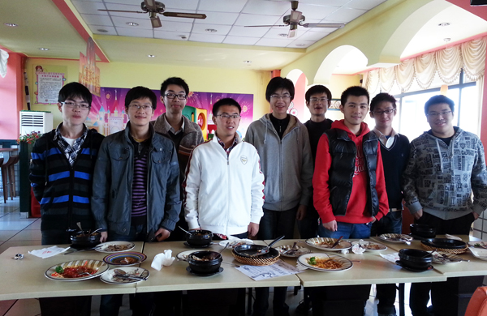
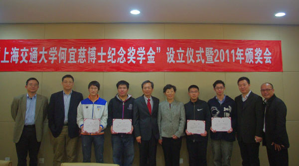

07/11/2012: Irving T. Ho Fellows at SJTU had lunch together
To welcome four new Irving T. Ho Fellows, senior fellows at SJTU had a lunch with them on campus.

(From left to right) Du Guangxiang (∂≈π„œÈ, New Fellow), Xiao Bineng (–§±Ãƒ‹), Zhang Haosheng (’≈∫∆ ¢, New Fellow), Qian Chen («Æ≥ø), Zou Lihao (◊fi¿Ì∫¿, New Fellow), Li Jinbo (¿ÓΩ≤®), Wu Wenhao (Œ‚ŒƒÚ´, New Fellow), Ying Bicheng (”¶±Ãÿ©) and Hans Hu (∫˙∫≤±Ú)12/04/2011: Donations Wired
All donations in China and the US were wired to the SJTU Education and Development Foundation. Receipts would be sent to donors in China next week.
11/22/2011: Scholarship Ceremony & New 2011 Fellows
The 2011 Irving T. Ho Memorial Scholarships Ceremony was held in the School of Microelectronics (SOME) at Shanghai Jiao Tong University (SJTU) on November 22, 2011.

(From left to right) Prof. Guoyong Shi ( ©π˙”¬, Professor at SOME), Prof. Yuzhuo Fu (∏∂”Ó◊ø, Dean of SOME), Bineng Xiao (–§±Ãƒ‹, New Fellow), Chen Qian («Æ≥ø, New Fellow), Dr. L.-T. Wang (Õı»ŸÃ⁄), Ms. Susan Chang (èà»A»„), Hanbin Hu (∫˙∫≤±Ú, New Fellow), Bicheng Ying (”¶±Ãÿ©, New Fellow), Mr. Lei Ma (¬Ì¿⁄, Secretary of the SJTU Education and Development Foundation), Mr. Yankun Gao (∏fl—”¿§, Administrator of the Student Affair Office at SOME, SJTU)Dr. L.-T. Wang (Õı»ŸÃ⁄) and his wife Ms. Susan Chang (èà»A»„) were invited to the ceremony, meeting the four new 2011 Irving T. Ho Fellows and signing the donation contract.
Prof. Fu gave an opening remark on the ceremony by first giving a warm welcome of Dr. L.-T. Wang and his wife to SJTU. It°Øs a great honor to have the the Irving T. Ho Memorial Scholarships reestablished in the School of Microelectronics (SOME) at SJTU. In the coming 5 years, twenty (20) new talented undergraduate students, 4 every year, will be selected as the recipients of the Irving T. Ho Memorial Scholarships by SOME. Dr. L.-T. Wang told a touching story of the reasons why the Scholarships were established to the 4 new Irving T. Ho Fellows, and then encouraged them to aim high and be decent citizens. Bineng Xiao (–§±Ãƒ‹), on behalf of all the new fellows, gave a °∞Thank you°± speech about his personal study experience over the past 3 years and is grateful for receiving this prestigious Award.
For more information on the ceremony, please click on the News Report posted to the SJTU Website.